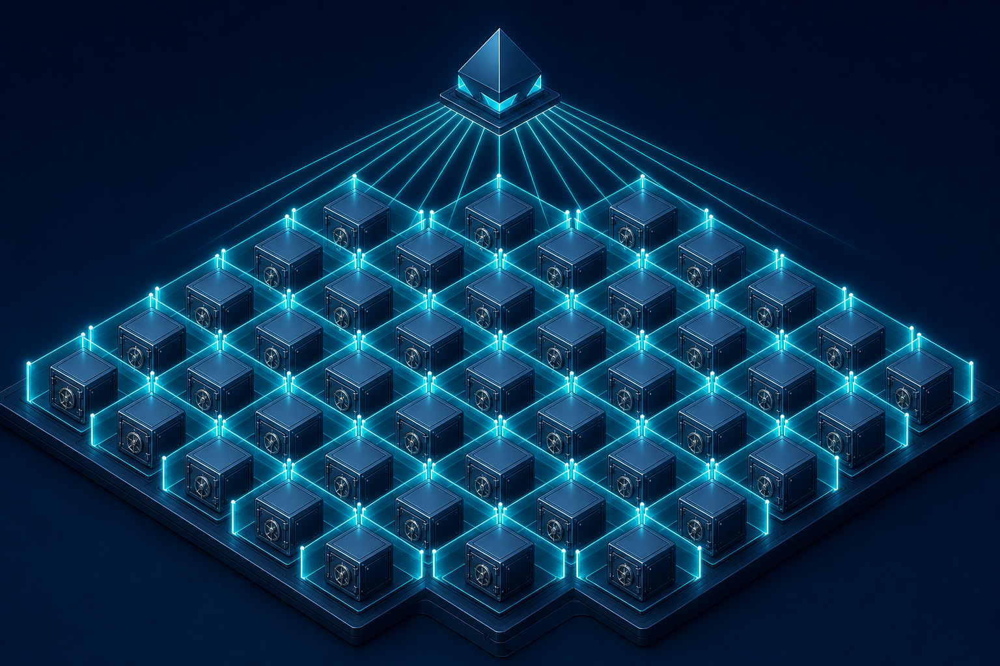

Liability Isolation at Scale: The Wyoming Series LLC and 33 Subsidiaries
How the Foundation's 66-W3 Wyoming Series LLC creates enforceable liability walls between 33 operational subsidiaries — protecting the parent entity and investor capital from cross-contamination of risk across diverse AGI-adjacent ventures.

The Challenge of Operating Diverse Ventures Under a Single Mission
A mission-driven organization developing artificial general intelligence does not operate a single, uniform business. The commercial activities that fund the mission, the technical projects that advance it, and the operational infrastructure that supports it span a wide range of domains: hardware procurement, diagnostic software, robotics, data infrastructure, international deployment, and more. Each domain carries its own regulatory profile, liability exposure, contractual relationships, and risk characteristics.
The organizational challenge is to house all of that operational diversity under a single coherent structure without allowing the liability associated with any one venture to contaminate the others or to threaten the parent entity's mission-critical functions. This is a standard challenge in diversified corporate structures, and the standard tools for addressing it — subsidiaries, holding companies, limited partnerships — are well understood.
The Foundation's commercial engine, the 66-W3 LLC, addresses this challenge through a specific legal vehicle: the Wyoming Series LLC. Understanding why that vehicle was chosen, and how it operates in the Foundation's structure, requires some familiarity with what a Series LLC is and what it does.
What a Wyoming Series LLC Is
A Series LLC is a limited liability company that is authorized by statute to establish internal series — compartments, in effect — each of which can hold its own assets, have its own members, operate its own business, and maintain liability isolation from the other series and from the master LLC.
Wyoming's Series LLC statute (Wyoming Statutes § 17-29-211, as amended; cite subject to legal verification) is among the most robust in the United States in terms of the liability protections it provides. Under the Wyoming framework (as the Foundation's structure intends to utilize it), the debts, liabilities, and obligations of one series are enforceable only against the assets of that series, not against the assets of other series or of the master LLC, provided that:
1. The series maintains separate books and records from other series; 2. The series maintains assets that are distinctly identified as held by that series; 3. The LLC operating agreement establishes the series and its liability isolation; and 4. The required statutory language appears in the LLC's organizational documents.
*Note: The enforceability of Series LLC liability isolation, particularly in cross-border contexts, remains subject to legal and judicial development. Investors should obtain qualified legal advice regarding the reliability of Series LLC protections in the jurisdictions relevant to their interests.*
The Foundation's 66-W3 LLC is organized as a Wyoming Series LLC housing 33 series (subsidiaries). Each series operates a distinct business activity. The liability isolation between series means that a catastrophic liability event in one subsidiary — a product liability claim, a regulatory enforcement action, a major contractual dispute — is intended to be contained within that series rather than spreading to the master LLC or to the other series.
The 33 Subsidiaries: Illustrative Structure
The 66-W3 structure currently houses 33 operational series. Two of these are worth examining as illustrations of the range of activities housed in the structure:
**Diagnostic.X** (illustrative name) is a series focused on AI-assisted diagnostic tools. Its commercial activity involves licensing diagnostic software to healthcare-adjacent operators. Its liability profile includes regulatory exposure in healthcare data handling, potential product liability associated with diagnostic outputs, and contractual risk in licensing relationships. These liabilities, under the Wyoming Series LLC framework, are intended to be isolated within Diagnostic.X — they do not attach to the master LLC or to any other series.
**Robotics DAO** is a series that combines commercial robotics operations with a DAO governance structure — a design discussed further in A4. Its liability profile includes physical product liability associated with robotic systems, regulatory exposure in commercial deployment contexts, and governance complexity arising from its DAO structure. Again, the Wyoming framework is intended to isolate these liabilities within the Robotics DAO series.
The remaining 31 series (not individually described here) span additional activity domains consistent with the Foundation's mission of developing and deploying AGI-adjacent capabilities. The exact number and composition of series may change over time as the commercial portfolio evolves; the Series LLC structure is designed to accommodate that evolution without requiring reorganization of the master entity.
How Liability Isolation Works in Practice
The theoretical liability isolation of a Series LLC is only as strong as the operational practices that maintain it. Courts examining whether to respect series boundaries will look at whether the series operated as genuinely separate — whether the boundaries were real or merely nominal.
The Foundation's approach to maintaining genuine series separation includes:
**Separate capitalization:** Each series is capitalized separately. Capital contributed to one series is tracked as that series's asset and is not commingled with the assets of other series or of the master LLC. Illustratively, if Series 7 is funded with $10 million for a specific commercial project, those funds are maintained in accounts identified as belonging to Series 7.
**Separate books and records:** Each series maintains its own financial records. Intercompany transactions between series — where they occur — are documented as arm's-length transactions with appropriate pricing. This documentation discipline is operationally expensive but legally necessary.
**Separate operating agreements and governance:** Each series operates under its own governance arrangement, which may include series-specific members, managers, and voting rights. The master LLC's operating agreement establishes the framework; each series's supplement establishes its specific governance.
**Separate external relationships:** Contracts with third parties are entered into in the name of the specific series, not in the name of the master LLC. This ensures that a counterparty's contractual claim attaches to the series, not to the broader entity.
The Three-Tier Structure and Liability Quarantine
The 66-W3 LLC sits in the middle tier of the Foundation's three-tier structure: above it is the Foundation itself (the California PBC), below it are the 33 series. The AGI Corp — the technical engine for AGI model development — is a separate entity coordinated with but structurally distinct from the 66-W3 commercial structure.
This three-tier arrangement provides a second layer of liability quarantine beyond the internal series isolation. Even if a catastrophic liability event overwhelmed one series's assets and pierced the series liability wall — an outcome the Wyoming framework is designed to prevent but cannot guarantee against in all circumstances — the liability would attach to the 66-W3 master LLC, not directly to the Foundation.
The Foundation's governance and mission-critical functions are housed in the California PBC at the apex of the structure. The Foundation owns interests in the 66-W3 LLC, but that ownership is mediated by the LLC structure. A liability event at the series level would, in the intended operation of the structure, need to exhaust the affected series's assets, then pierce the Wyoming Series LLC liability wall, then work through the 66-W3 master LLC's assets, before reaching the Foundation itself.
This structural distance is not merely theoretical. It provides time and legal process before mission-critical Foundation assets — including intellectual property, governance infrastructure, and the relationships that sustain the Foundation's public benefit purpose — are exposed to commercial liability.
Tax Treatment and Investor Considerations
Wyoming Series LLCs are typically treated as pass-through entities for U.S. federal income tax purposes, meaning that income and loss flow through to members rather than being taxed at the entity level. The tax treatment of individual series within a Series LLC is an area of ongoing IRS guidance development; investors should obtain qualified tax advice regarding the treatment applicable to their interests.
For non-U.S. investors, the tax and regulatory treatment of interests in a Wyoming Series LLC depends on the laws of the investor's home jurisdiction. The Series LLC is a distinctly American legal structure that may not be recognized or may be treated as analogous to other entities in foreign legal systems. This recognition question has implications both for tax treatment and for the enforceability of liability isolation in foreign proceedings.
The Foundation does not represent that the Wyoming Series LLC structure eliminates all tax complexity or provides globally consistent liability protection. It represents that the structure is designed to optimize these attributes within the United States legal framework and that investors should obtain jurisdiction-specific advice for cross-border considerations.
What Investors Should Evaluate
Investors considering participation in the Foundation's structure through the 66-W3 LLC or its series should focus on several questions:
**Series identification:** Which specific series does the investment relate to? What is that series's business activity, capitalization, liability profile, and governance arrangement?
**Maintenance of separation:** Does the 66-W3 structure maintain the operational disciplines — separate books, separate accounts, separate contracting — necessary to preserve Series LLC liability isolation?
**Jurisdiction of enforcement:** If a liability event occurred, in what jurisdiction would enforcement proceedings likely occur? Is that jurisdiction one in which Wyoming Series LLC protections are recognized?
**Upstream exposure:** Does the investor's interest include any direct exposure to the master LLC or to the Foundation, in addition to the specific series? If so, what are the assets and liabilities at those levels?
These are due diligence questions, not obstacles. The Foundation's position is that the Wyoming Series LLC structure represents a thoughtful approach to liability management at scale, and that investors who understand the structure will find it more reassuring than a less structured alternative.
Conclusion
The 66-W3 Wyoming Series LLC is the Foundation's commercial engine, designed to house 33 operational subsidiaries with liability isolation between them and from the parent Foundation. The structure allows the Foundation to pursue a diverse portfolio of AGI-adjacent commercial activities without allowing the liability profile of any one activity to contaminate the others or to threaten the Foundation's mission-critical functions.
The protections are real but conditional on operational discipline and legal enforcement in sympathetic jurisdictions. Investors should approach the structure as a thoughtfully constructed framework that reduces rather than eliminates cross-contamination risk, and should obtain qualified legal and tax advice before making investment decisions.
*Nothing in this article constitutes legal advice. All structural descriptions represent the intended design of the Foundation's commercial vehicle and require formal legal opinion before reliance.*